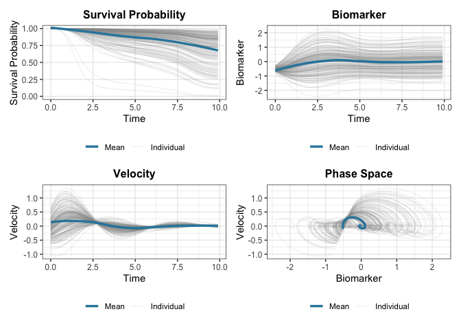

The JointODE package provides a unified framework for joint modeling of longitudinal biomarker measurements and time-to-event outcomes using ordinary differential equations (ODEs).
Overview
JointODE models biomarker evolution using ordinary differential equations (ODEs) and links them to survival outcomes. Unlike traditional approaches using splines or polynomials, ODEs naturally capture the dynamic behavior of biomarker trajectories.
Model Structure
Longitudinal Model: Biomarker trajectories evolve according to a second-order ODE:
\ddot{m}_i(t) + 2 \xi_i \omega_i \dot{m}_i(t) + \omega_i^2 m_i(t) = k \omega_i^2 \mu_i(t)
where m_i(t) is the biomarker value, \dot{m}_i(t) is velocity (rate of change), and \ddot{m}_i(t) is acceleration. Subject-specific dynamics are characterized by natural frequency \omega_i and damping ratio \xi_i, with \mu_i(t) representing external forcing (e.g., treatment effects, covariates). Individual heterogeneity is captured through random effects on these ODE parameters.
Survival Model: The hazard function incorporates biomarker dynamics:
\lambda_i(t) = \lambda_{0}(t)\exp\left[\alpha_1 m_i(t) + \alpha_2 \dot{m}_i^{\gamma}(t) + \mathbf{W}_i^{\top}\boldsymbol{\phi}\right]
where \gamma \in \{0, 1, 2\} controls the velocity power (0: no velocity, 1: linear, 2: quadratic).
Key Features
- Subject-specific dynamics: Random effects on ODE parameters capture individual heterogeneity
- Flexible hazard: B-spline baseline hazard with biomarker value and velocity effects
- Efficient computation: C++ implementation with parallel processing support
For full mathematical details, see the technical documentation.
Installation
You can install the development version of JointODE from GitHub with:
# install.packages("pak")
pak::pak("ziyangg98/JointODE")Quick Start
Here’s a basic example using the included simulated dataset:
library(JointODE)
library(survival)
# Load example dataset (200 subjects with longitudinal and survival data)
data(sim)
# Fit joint ODE model
longitudinal_data <- sim$data$longitudinal_data[
, c("id", "time", "observed", "x1", "x2")
]
fit <- JointODE(
longitudinal_formula = observed ~ biomarker + velocity + x1 + x2 +
(biomarker + velocity | id),
survival_formula = Surv(time, status) ~ w1 + w2,
longitudinal_data = longitudinal_data,
survival_data = sim$data$survival_data,
control = list(atol = 1e-3, verbose = 3)
)
# Model summary
summary(fit)
#>
#> Call:
#> JointODE(longitudinal_formula = observed ~ biomarker + velocity +
#> x1 + x2 + (biomarker + velocity | id), survival_formula = Surv(time,
#> status) ~ w1 + w2, longitudinal_data = longitudinal_data,
#> survival_data = sim$data$survival_data, control = list(atol = 0.001,
#> verbose = 3))
#>
#> Data Descriptives:
#> Longitudinal Process Survival Process
#> Number of Observations: 17350 Number of Events: 61 (30%)
#> Number of Subjects: 200
#>
#> AIC BIC logLik
#> -31459.585 -31367.232 15757.792
#>
#> Coefficients:
#> Longitudinal Process: Second-Order ODE Model
#> Estimate Std. Error z value Pr(>|z|)
#> biomarker -1.091e+00 5.662e-03 -192.618 <2e-16 ***
#> velocity -8.568e-01 1.502e-02 -57.054 <2e-16 ***
#> (Intercept) -2.312e-05 1.390e-03 -0.017 0.987
#> x1 5.443e-01 2.969e-03 183.302 <2e-16 ***
#> x2 -4.901e-01 2.795e-03 -175.340 <2e-16 ***
#> ---
#> Signif. codes: 0 '***' 0.001 '**' 0.01 '*' 0.05 '.' 0.1 ' ' 1
#>
#> ODE System Characteristics:
#> Estimate Std. Error z value Pr(>|z|)
#> T (period) 6.016586 0.015618 385.24 <2e-16 ***
#> xi (damping ratio) 0.410243 0.006966 58.89 <2e-16 ***
#> ---
#> Signif. codes: 0 '***' 0.001 '**' 0.01 '*' 0.05 '.' 0.1 ' ' 1
#>
#> Survival Process: Proportional Hazards Model
#> Estimate Std. Error z value Pr(>|z|)
#> alpha_1 0.7241 0.1880 3.852 0.000117 ***
#> alpha_2 1.8300 0.7721 2.370 0.017785 *
#> w1 0.6862 0.1245 5.512 3.55e-08 ***
#> w2 -1.3431 0.2859 -4.697 2.64e-06 ***
#> ---
#> Signif. codes: 0 '***' 0.001 '**' 0.01 '*' 0.05 '.' 0.1 ' ' 1
#>
#> Baseline Hazard: B-spline with 3 basis functions
#> (Coefficients range: [-4.816, -2.023] )
#>
#> Variance Components:
#> Measurement Error SD: 0.098718
#> Random Effect Covariance Matrix:
#> [,1] [,2]
#> [1,] 0.001380 0.001859
#> [2,] 0.001859 0.034803
#>
#> Model Diagnostics:
#> C-index (Concordance): 0.667
#> Convergence: EM algorithm converged after 26 iterations
# Plot results
plot(fit)
#> `geom_smooth()` using formula = 'y ~ x'
#> `geom_smooth()` using formula = 'y ~ x'
#> `geom_smooth()` using formula = 'y ~ x'
The formula specifies:
-
ODE terms:
biomarkerandvelocityare the state variables (value and slope) in the ODE - Covariates:x1andx2are external variables affecting the dynamics - Random effects:(biomarker + velocity | id)allows subject-specific coefficients on the ODE value and slope terms
Learn More
-
Getting Started: See
vignette("JointODE")for a detailed tutorial -
Technical Details: See
vignette("technical-details")for mathematical formulations -
Model Comparison: See
vignette("comparison")for comparisons with traditional joint models
Code of Conduct
Please note that the JointODE project is released with a Contributor Code of Conduct. By contributing to this project, you agree to abide by its terms.